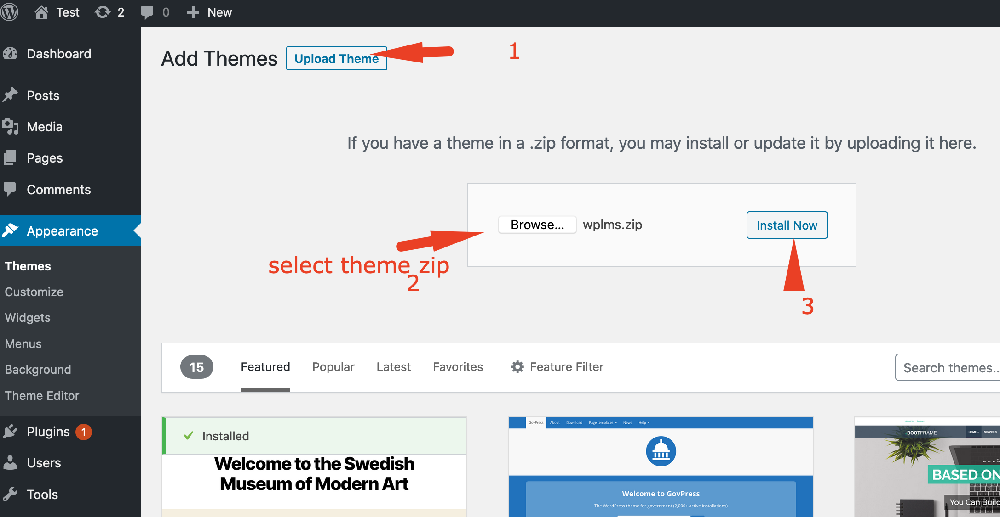

Installation
WPLMS version 4.
- Installing on a fresh WordPress Setup
- Installing on a existing WordPress site
- Installing on a existing WPLMS site
- Upgrading from 3.x version
Installing WPLMS on a Fresh WordPress site.
Installing WPLMS requires a working WordPress site. So, first you need to setup WordPress on your server. You can refer this link on how to setup WordPress on your server.
What is a Fresh WordPress site ? A Fresh WordPress site is a WordPress site with no content inside it. A fresh wordpress site will have 1 page with title Sample Page, 1 post with title Hello world !. One plugin Hello Dolly and Default WordPress Themes like TwentyTwenty.
Hosting Requirements and Recommendations for the WPLMS Theme
The WPLMS is an advanced WordPress theme. It provides a complete framework for building educational sites, so comparing WPLMS with any other regular WordPress theme is like comparing apples to oranges.
WPLMS uses popuplar plugins maintained by the WordPress core team like the BuddyPress, WooCommerce and BBPress.
Out of these only BuddyPress is the required plugin. If you need to sell courses you will be required to install WooCommerce. If you need Discussion forums in your site, you will need to install BBPress.
The Hosting recommendations posted by these plugins are the basis for WPLMS Hosting recommendations as well.
- PHP Version 7.2.1 [tested upto version 7.4.8 as of 20th August 2020]
- Mysql/MariaDb Version 5.6+/10.1+
- Upload Limit 10 MB or more
- PHP Memory Execution Limit 128 MB or more
- PHP Time Limit 128 MB or more
- PHP Post Max Size 128 MB or more
- PHP Max Input Vars 128 MB or more
-
PHP extensions required
dom,gmagick,SimpleXML,ssh2,xml,
xmlreader,curl,date,exif,filter,ftp,gd,hash,iconv,imagick,json,libxml,
openssl,pcre,posix,sockets,SPL,tokenizerz,lib,mbstring,mysqli.
As a principle we are not affiliated to any hosting company. So the recommendations posted here are unbiased and based on feedback we collected from our users.
Although any hosting plan should work for WPLMS. A VPS or above plan provides better compatibility and lesser issues in the long run. Sharing hosting with everything unlimited usually do not work out good because the server is shared among many entities. From our observation : WPEngine, HostGator, KnownHost, OVH, DigitalOcean and SiteGround are good hosting providers. This list by no means is an exhaustive list, you are free to try other options and if they work great you can help us in updating this list. Just send out an email here
Uploading the theme
Uploading the WPLMS theme is just like any other theme. Following are the steps you can follow to upload the theme.
Download the WPLMS WordPress theme from your Themeforest Account.
 Log in to your WordPress Admin [a.k.a WP Admin]
Log in to your WordPress Admin [a.k.a WP Admin]
Login to your WordPress administration panel. You can simply append wp-admin to your site's url. So if your site is ABC.com , ABC.com/wp-admin is your WP Admin area.
Go to Apperance - Themes - UploadLocate the Apperance in the left menu. Click on it, locate the themes sub-menu item, click on it. Locate the Add new button on your screen.
 Upload the Theme
Upload the Theme
Click on Upload Theme button. A Upload form will appear. Drag and drop the theme downloaded in the previous step here. Click on Install Button
If you see the below error while uploading the theme, it most likely means that yoursame server is restricting the upload.

The possible reasons for above are :
- Server Upload limit less than 8MB.
- PHP Zip library not installed
- File permissions incorrect.
- WordPress incorrectly configured.
- Previous attempt of uploading the theme failed due to network issues.
The best course of action in all above cases is to contact your web host. For the last step "previous failed attempt", you can login via FTP and locate for wp-content/themes/wplms folder and remove it.
Setup Wizard
On uploading and activating the theme, you will see a setup wizard automatically taking control of the things. This is expected and recommended method of installing the theme.
The Purpose of the setup wizard is to configure a lot of settings automatically and avoid the hassle of manually configuring the theme.
Selecting an Installation Type
We have categorised the WPLMS theme usage into 4 broad categories : Instructor, Academy, University and MOOC (massive open online courses ). We've Demonstrated the theme into above broad categories and selected a feature set for each of these categories. However, this is just a classification factor and during the course of setup wizard you are free to enable recommended feature, designs for the type of installation you are selecting in this step.
Even after the setup has been completed you can always re-run the setup wizard and enable disable features which you may need later on. For example : Enabling BigBlueButton Meetings in existing site.
You will also see configuration checks and file permission checks which indicate any potential problem theat may arise during the setup wizard. Mouse over to see more details.
It is always better to make sure there is no failed configuration and file permission checks. However, sometimes failed check in configuration can also appear if the wordpres is unable to identify them.
Select a Demo Style
If you want to install a Theme Demonstration [Demo] then click on the image to select it. When a Demo installation is selected, you will see a check mark over it. To switch to another demo click on its image select it. To see how the demo works, click on the pop-out icon and you can go through the demos.
Chosing latest demos is always a good idea as they have better design and import wizard has been tested thorroughly for the demos.
You can skip this step from the bottom skip option to not install any content or demo style.
The images in this screen require an active internet connection, if you do not see images then please check your internet connection.

Below the demos you will find import content section. This expects a upload file to use as a demo style. We will come back to this area in later sections.
Select Features for this Site
In this area you select features for your site. To select a feature click on it and a check mark would appear over it. Click on it again to remove the check mark. Some of the features will come pre-selected based on the demo style you've selected in previous step.
Installing Plugins
Th theme comes with required and recommended set of plugins.Note that recommendations are good to have but not absolute necessity for the theme to work.
The